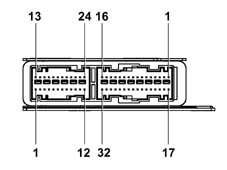

AIR BAG CONTROL UNIT (CAB)
- Path
- Descriptions > 55 ELECTRICAL EQUIPMENT > 5505 INSTRUMENT/GAUGE ELECTRICAL CIRCUITS > 5505A multi-function components > AIR BAG CONTROL UNIT (CAB)
- Kind
- system description
- Applies to
- all engines; all production periods
- Interactive page
- https://sloeber94.github.io/elrnDB-lThss/en/#/175294
Applies to: all engines; all production periods
COMPOSITION
The Air Bag control unit is connected to a master control unit.

OPERATION
The Air Bag control unit is connected to the dashboard and rear wiring.
AIR BAG CONTROL UNIT PIN OUT
Connector 24 (connection with rear cable)
PIN | FUNCTION |
|---|---|
1 | - Passenger presence sensor |
2 | + Passenger presence sensor |
3 | not connected |
4 | not connected |
5 | - Right rear satellite |
6 | + Right rear satellite |
7 | + Left rear satellite |
8 | - Left rear satellite |
9 | not connected |
10 | Device for inhibiting rear Side Bags |
11 | not connected |
12 | not connected |
13 | + Passenger Head Bag |
14 | - Passenger Head Bag |
15 | - Driver's Head Bag |
16 | + Driver's Head Bag |
17 | + Right rear Side Bag |
18 | - Right rear Side Bag |
19 | - Left rear Side Bag |
20 | + Left rear Side Bag |
21 | + Right rear pretensioner |
22 | - Right rear pretensioner |
23 | - Left rear pretensioner |
24 | + Left rear pretensioner |
Connector 32 (connection with dashboard cable)
PIN | FUNCTION |
|---|---|
1 | + Front pretensioner drivers |
2 | - Front pretensioner drivers |
3 | - Front pretensioner passenger side |
4 | + Front pretensioner passenger side |
5 | + Air-Bag Driver 1 stage |
6 | - Air-Bag Driver 1 stage |
7 | - Air-Bag Driver 2 stage |
8 | + Air-Bag Driver 2 stage |
9 | + Side Bag Driver |
10 | - Side Bag Driver |
11 | - Side Bag front Passenger |
12 | - Side Bag front Passenger |
13 | + Air-Bag Passenger 2 stage |
14 | - Air-Bag Passenger 2 stage |
15 | - Air-Bag Passenger 1 stage |
16 | + Air-Bag Passenger 1 stage |
17 | Earth |
18 | INT from F-50 CPL |
19 | K line |
20 | Warning light for Passenger Air Bag disabling |
21 | Air Bag failure warning light |
22 | Seat belts unfastened warning light |
23 | not connected |
24 | Rear Side Bag disabling warning light |
25 | - Left front satellite |
26 | + Left front satellite |
27 | + Right front satellite |
28 | - Right front satellite |
29 | not connected |
30 | Passenger Air Bag disabling switch |
31 | Driver buckle switch |
32 | Front passenger buckle switch |